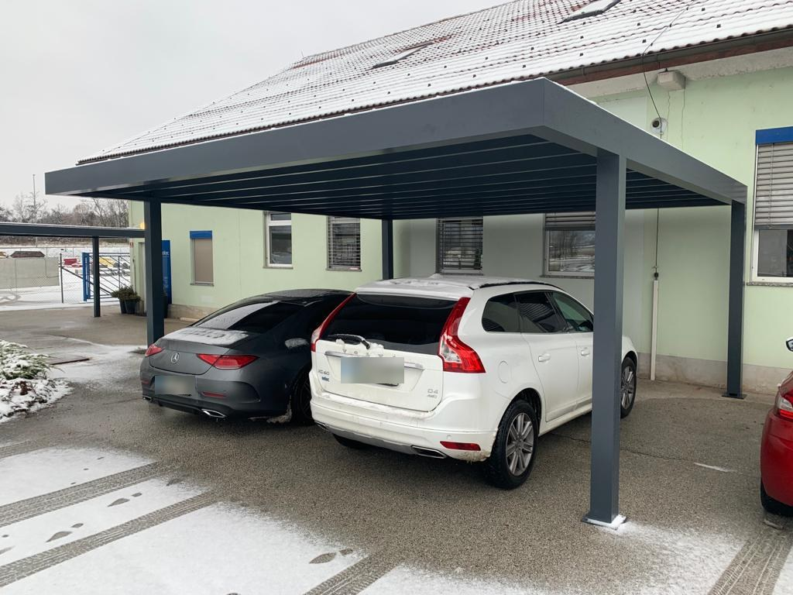
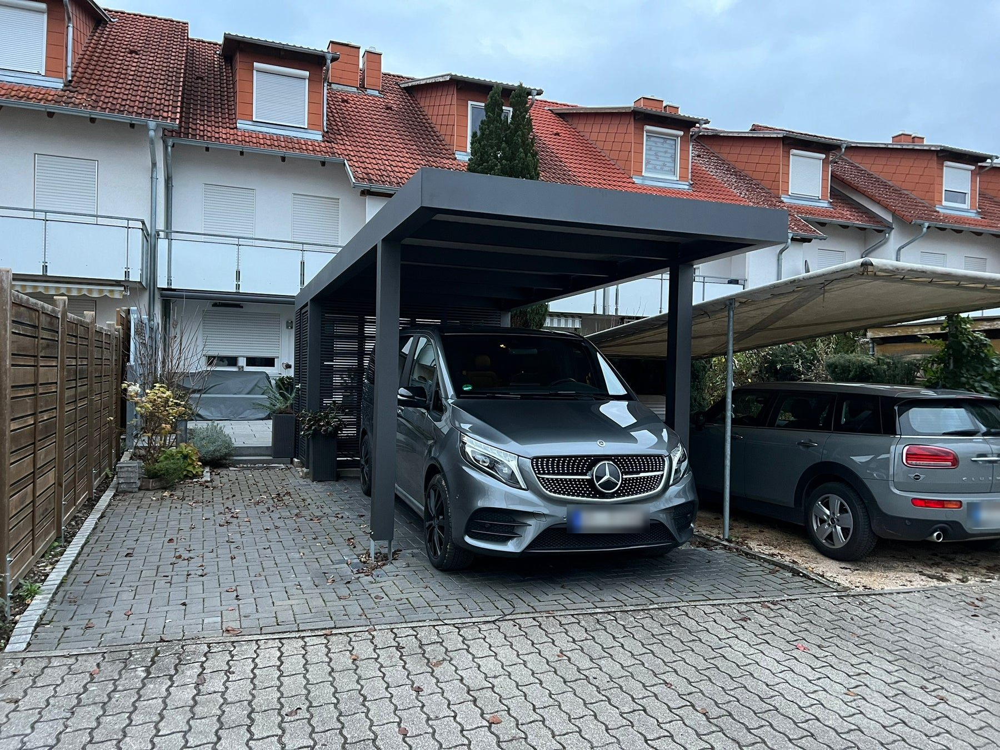

Konštrukcia
Oceľové stĺpy, hliníkový obklad
- Oceľové stĺpy a prievlaky
- Hliníkový obklad konštrukcie
- Práškový lak v odtieni z RAL palety
- Záruka kvality povrchov do 40 rokov

Ochrana pred krupobitím, snehom aj rozpáleným interiérom v lete. Oceľová konštrukcia Koverta s hliníkovým obkladom, alebo celohliníkový systém Soltec.
Z čoho je to postavené
Konštrukciu, povrch aj výplne riešime naraz, ešte pred výrobou — na hotovom prístrešku preto nevidno žiadne technické vrstvy.
Prejsť na nezáväznú ponukuKonštrukcia

Strecha

Výplne
Katalógové rozmery
Toto sú hotové veľkosti z katalógu. Ak vám žiadna presne nesedí, konštrukciu urobíme na mieru — rozmer je vec výroby, nie výberu z tabuľky.
Pre jedno auto 27 rozmerov od 4 497 €
Pre dve autá 27 rozmerov od 6 497 €
Pre tri autá 1 rozmer od 12 490 €
9 mšírka
Ceny sú z e-shopu koverta.sk vrátane DPH. V cene je doprava aj montáž, dodanie do ôsmich týždňov. Tlačidlo 3D otvorí konfigurátor e-shopu. Rozmer mimo katalógu vyrobíme na mieru.
Skladba konštrukcie
Oceľ nesie, hliník sa nekazí, povrch drží práškový lak. Záruka kvality povrchov do 40 rokov.
Prejsť na nezáväznú ponuku
Takto je postavený prístrešok Koverta. Hliníkový Soltec má inú skladbu — celý z hliníka, bez oceľového skeletu. Presné profily dostanete v návrhu.
Podklad a kotvenie
Pätky vykopeme a vybetónujeme ako doplnkovú službu. Kóty dostanete v návrhu, dajú sa pripraviť aj svojpomocne.


Materiál
Oceľové a hliníkové komponenty so zárukou kvality povrchov do 40 rokov. Vyrábame ich na Slovensku, takže rozmer nie je limitovaný katalógom.
Čo je v cene
Z našich montáží
Fotografie z našich montáží. Každý prístrešok je robený na mieru pozemku.

Prístrešok pre jedno auto s bočnou lamelovou výplňou
Dvojmiestny prístrešok pri rodinnom dome

Prístrešok napojený na dom, vstup do garáže
Hliníkový prístrešok Soltec, Nitra
Prístrešok pre tri autá, Plavecký Štvrtok
Prístrešok pred vstupom do garáže
Časté otázky
Nenašli ste odpoveď? Zavolajte nám, poradíme aj bez záväzku.
+421 948 482 266Rozhoduje zastavaná plocha. Prístrešok do 50 m² sa vo väčšine prípadov rieši ohlásením drobnej stavby na miestnom stavebnom úrade — tlačivo, jednoduchý situačný nákres a doklad o vzťahu k pozemku. Nad 50 m², pri stavbe tesne na hranici pozemku alebo v pamiatkovej zóne úrad zvyčajne žiada stavebné povolenie.
Posledné slovo má vždy váš stavebný úrad. Pri zameraní vám povieme, do ktorej kategórie váš zámer spadá, a pripravíme podklady, ktoré k tomu treba: rozmery, osadenie na pozemku a výkres konštrukcie.
Do betónovej pätky alebo do existujúcej spevnenej plochy. Spôsob určíme pri zameraní podľa podložia a podľa zaťaženia snehom a vetrom vo vašej lokalite. Ak pätky ešte nie sú, vieme ich spraviť ako doplnkovú službu.
Z rozmeru, typu strechy, počtu stĺpov a zvolených výplní. Doprava a montáž sú v cene. Presnú sumu dostanete po zameraní; konfigurátor dá orientačné číslo hneď.
My. Betónové pätky vieme vykopať a vybetónovať podľa kót z odsúhlaseného návrhu — je to doplnková služba k montáži, nie automaticky súčasť ceny. Ak už máte betónovú platňu alebo zámkovú dlažbu, kotvíme priamo do nej a pätky odpadajú.
Pre bežné osobné auto počítajte šírku od 2,5 m a dĺžku od 5,2 m — to sú aj najmenšie katalógové rozmery. Ak chcete pohodlne otvoriť dvere z oboch strán alebo pod prístreškom aj prejsť, pridajte pol metra na šírku. Pre dodávku alebo karavan riešime výšku individuálne.
Áno. Pultovú strechu z trapézového profilu vieme doplniť o izoláciu — bráni prehrievaniu, kondenzu a tlmí hluk dažďa. Má zmysel tam, kde prístrešok stojí pri okne spálne alebo nadväzuje na terasu.
Štandardný prístrešok postavíme za jeden deň. Ak si objednáte aj pätky, montáž ide až po tom, čo betón dostatočne vyzrie — celkovo teda počítajte s dvomi návštevami v odstupe niekoľkých dní.
Áno, a je to prvá vec, ktorú počítame. Konštrukciu navrhujeme na zaťaženie snehom podľa snehovej oblasti, v ktorej stojíte — rovnaká zostava sa preto v Nitre a pod Tatrami nerobí rovnako.
Zostavu vieme predĺžiť alebo doplniť o bočné výplne, osvetlenie či box. Ťažšie sa dopĺňa nosnosť, takže ak viete, že o dva roky pribudne fotovoltika, povedzte nám to hneď pri návrhu — pripravíme na to konštrukciu aj vedenie.
Cenová ponuka zadarmo
Prídeme zamerať, navrhneme umiestnenie stĺpov a poviete si, čo s bokmi. Zameranie aj ponuka sú zadarmo.
Máme ho u seba aj s fotkami, ak ste ich pripojili. Takto to bude pokračovať:
Súri to? +421 948 482 266 · obchod@koverta.sk